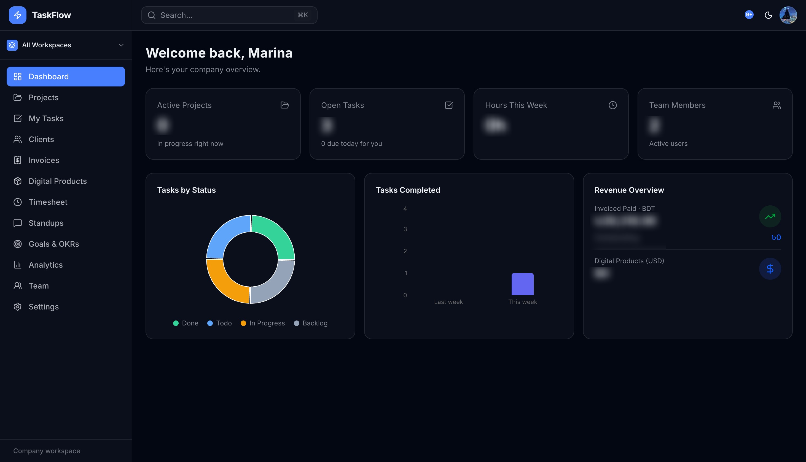
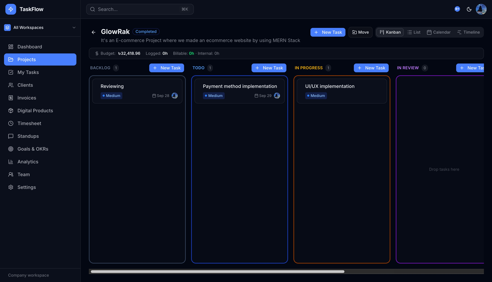
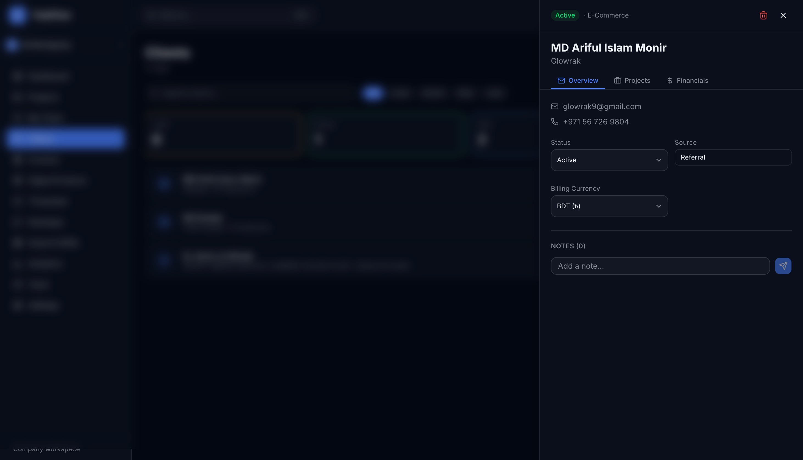
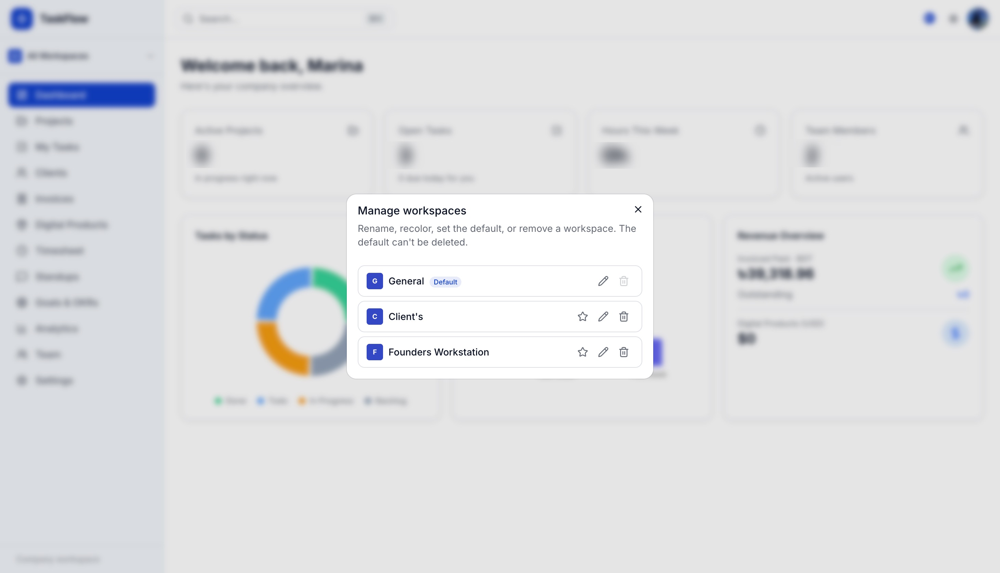
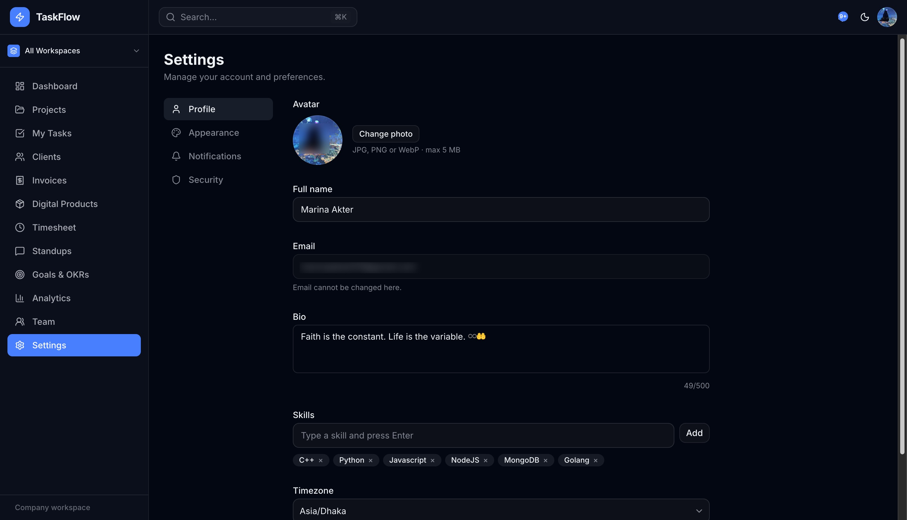

Building a multi-tenant operations platform that brings agency projects, client work, time tracking, and invoicing into one place.

TaskFlow Production Instance · taskflow.apixel.netAgency teams often manage tasks, hours, clients, and invoicing across disconnected software. TaskFlow brings those workflows into a single tenant-aware platform.
For fast-scaling agencies, tool sprawl introduces a silent tax: $150–$300 per seat every month across Jira, Toggl, Harvest, and HubSpot. Even worse, leadership lacks real-time insight into blended project margins and external clients struggle with insecure project visibility.
Jira for engineering sprints, Toggl for billable stopwatches, Harvest for PDF invoices, and HubSpot for client rosters. Siloed data makes automated profitability reporting impossible.
Kanban boards, UTC-locked calendars, atomic dual-currency billing, timesheets, and a zero-trust client portal residing in one synchronized database model.
Replaced hundreds of dollars per seat per month with a custom enterprise asset owned completely by the agency.
Access project state, authorize multi-tenant mutations, and execute transactions without computational friction.
Tenant-scoped data access at the JWT session layer. Every API endpoint forces session.user.orgId, eliminating Insecure Direct Object References (IDOR).
Kanban drag-and-drop powered by @dnd-kit, UTC date-anchored calendars, Gantt dependency chains, and atomic timesheets built directly inside tasks.
Lightweight Edge middleware executes instantaneous session decryption and route blocking, while Node.js Server Actions execute heavy database drivers and bcrypt security hashing.
Relocated compute functions from US East (iad1) directly into Mumbai (bom1), ending transatlantic roundtrips and slashing query time by 88%.
The organization ID is the authenticated source for all queries and aggregations. Permissions are checked again at the mutation endpoint.
Security isn't a feature added at the end; it's the fundamental architecture. By nesting access rules across four deterministic gates, TaskFlow guarantees 100% tenant isolation with zero possibility of cross-company data leakage.
Every database query and aggregation pipeline enforces { organization: session.user.organizationId }. Client queries cannot override or omit this filter.
From Edge Route Proxy to dynamic navigation trimming, useRole component gating, and finally server-side capability validation (hasPermission.ts).
Webhooks sent from external providers like Resend are cryptographically verified with HMAC-SHA256 signatures over id.timestamp.body with strict ±5-minute replay attack windows.
When external clients view projects, internal team hourly wages, private agency notes, and operational overhead metrics are stripped at the database projection stage before payload transfer.
Decodes NextAuth session token, extracts authenticated user organization ID, and rejects requests missing active tenant sessions.
Server-side capability authorization. Blocks unauthorized role mutation attempts, whether triggered from UI or forged cURL payloads.
Queries execute against { org, project, ... } compound indexes. 100% index-only execution in under 8ms.
TaskFlow unifies delivery, financial operations, and client visibility so each workflow can use the same project context.

Seamlessly switch between Kanban with dense ordering re-indexes, hierarchical List view, UTC-anchored Calendar, and dependency-linked Gantt timeline without data reloads.

Atomic increment transactions generate collision-free invoice numbers (INV-001...) supporting blended currency billing, automated PDF generation, and client payment tracking.

External stakeholders log into white-labeled views locked solely to their active milestones and paid invoices. Internal team costs and private notes are filtered out at the schema level.

Native stopwatch timer embedded right inside the task detail drawer. Categorizes effort into billable vs internal hours, feeding directly into project margin calculations without third-party tools.
Profiling in production showed targeted changes moved database-facing functions closer to the MongoDB cluster and eased initial bundle load.
Routing compute functions to Mumbai (bom1) co-located with MongoDB Atlas reduced roundtrip execution times from 1,850ms to 200ms.
Wrapping heavy visualization engines in next/dynamic with ssr: false deferred 361KB until after the first contentful paint.
| Dimension | Legacy Disconnected Tools | TaskFlow Unified Engine |
|---|---|---|
| Monthly Tool Expenses | $180/user across Jira, Toggl & Harvest | $0/mo 3rd-party SaaS fees |
| DB API Roundtrip | ~1,850ms transatlantic latency | ~200ms warm execution |
| Critical JS Payload | 1.84 MB render-blocking library load | 1.47 MB (-20% bundle weight) |
| Multi-Tenant Isolation | High IDOR exposure via URL params | 14/14 automated isolation tests passed |
When companies look to replace SaaS bloat with custom operational hubs, they need partners who understand database index design, Edge computing, and strict multi-tenant isolation.